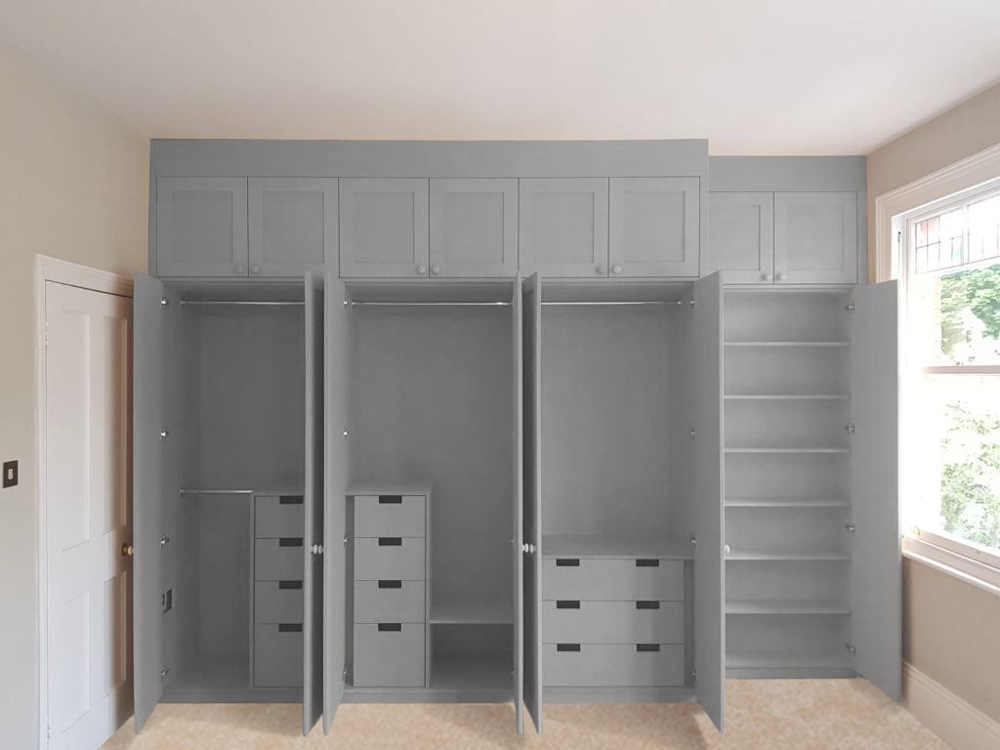

Storage Problems
How could bespoke wardrobes help you? Well, for those of us living in the Capital storage can be a tricky subject when it’s not already built in to your home.
Period properties don’t tend to have storage solutions in most rooms and modern flats vary in their design - some ensuring there is enough built-in storage space and others much less.
We’ve found that many people moving into a new-build home have in-built wardrobes in their bedrooms but these often take the form of a large partition wall and a set of doors which don’t have shelves, cupboards or drawers tailored to your needs – just a big empty shell. Also you’d be surprised by the fact that often the doors don’t actually help you maximise the space all the way to the ceiling and instead cut off much lower than the actual accessible space of the wardrobe – we often have clients asking us to knock this top part out so we can create a useful cupboard.
Generally these new-build fitted wardrobes are not suited to the individual’s needs so with a bespoke wardrobe you can discover a new level of organisation and efficiency in your bedroom!
Now there is always the design-it-yourself wardrobe from our blue and yellow Swedish cousins or that lovely one you saw in one of the major high street brands but there is still the fact that they can’t always perfectly fit your space and maximise the potential of your rooms.
Get A Quote Now
A pair of traditional alcove cabinets with panel doors and framed shelving, MDF & hand painted in eggshell paint

HANNA
A pair of traditional alcove cabinets with panel doors and framed shelving, MDF & hand painted in eggshell paint
A pair of traditional alcove cabinets with panel doors
and framed shelving, MDF & hand painted in eggshell
paint
RACHEL
A pair of traditional alcove cabinets with panel doors
and framed shelving, MDF & hand painted in eggshell
paint
Custom Fitted Wardrobes
In London space is at a premium - this is the benefit of hand-made, built-in furniture - we can take advantage of every odd space, nook and cranny, making the best piece of furniture by utilizing every little bit of your room. Whereas a pre-made wardrobe can’t fit flush to your ceiling, accumulating dust and nor can it close off those horrible gaps between the wardrobe and the back wall, we can make the top and sides of your wardrobe or storage unit millimetre-snug to the wall – even if it is at an odd angle or bulges in the odd place. This is how you can maximise your space.
Often people have trouble with storing their suitcases or smaller bags and we find that in many cases when you have a relatively high ceiling we can make the most of it by building on higher level cupboards above the wardrobe hanging space which can solve this and in a beautiful and subtle way as in the next picture:
Then there is the fact that you can specify, to the centimetre, the length of each hanging space – this for us ladies is an important factor – long dresses and coats are often brushing the floor of some wardrobes or even having to be folded up on a hanger in order to fit - sometimes even with pegs to hold them in place!
The Sky is the Limit
With built-in wardrobes you can choose whatever length of hanging space you want. You can have a single rail, double-rail, long or short hanging spaces, pull-down hanging racks, shelves on the very bottom or splitting the space into two sections - with shelves on one side and a rail on the other. If you don’t want any shelves you can reserve the bottom space for drawers - the sky is the limit!
Your bags can have their own shelf space, pull out tray or even a drawer. Suitcases can have their own specified location - usually in the top box. Then those other things that you want out of sight and you are not going to need so frequently can have a space made specifically for their use.
Truly Custom Wardrobes
Then you can make the wardrobe flush to the wall – despite any size of skirting board. This can allow us to reduce how far the wardrobe sticks into your room. You can decide how obtrusive or unobtrusive your wardrobe will be. But often just the look of a flush-to-the-wall wardrobe looks unobtrusive as it appears to be part of the room upon initial inspection. Also by matching the paint colour of the wardrobe with your walls you create a seamless feel and the appearance of more space. Our in-house designer can accommodate for this.
So that leads us to the fun part - colours and doors! You can change the feel of a room with the outer look of your bespoke wardrobe. Bespoke carpentry I always think looks high-end whatever the finish but you can pick to your taste. If you prefer the traditional look with panel doors style you can get those but these can be simple or more complex depending if you like the panel style with beading – and what kind of beading. Then you can have glass inserts or mirrors affixed to your doors. With bespoke furniture you are not limited in the range of doors you can have.
Then you have the colour of your room – you can do whatever you like! The custom wardrobe can match the colour of the walls of your room and blend in or it can stand out on its own – bold colours that contrast with the rest of the room are more and more popular.
So whether you want a statement piece or a more subtle piece you can have it with a bespoke, fitted wardrobe.
We can help
If you want to keep your clutter at bay and be the most organised you can be within the space at hand you have then consider using bespoke carpentry to maximise your space. Contact us for more information. We can offer Shaker-style, Contemporary, Victorian, Classical, or any type of built in wardrobe or cupboard.
Bespoke Carpentry London
We know every job is as individual as the client we are serving so we take time to visualise your piece and work on the designs with you until you are fully satisfied.
Or fill in our form